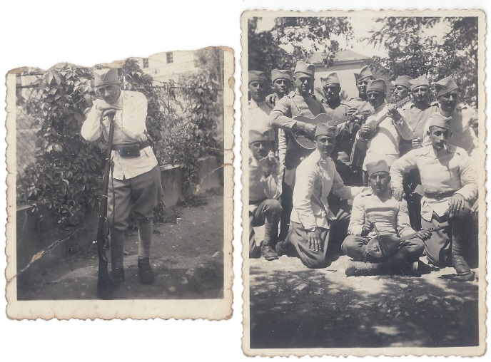

Vojska Kraljevine Srba, Hrvata i Slovenaca i Kraljevine Jugoslavije je jedna velika i na žalost slabo obrađena tema. Od kraja II sv. rata pa sve do kasnih 80-tih godina 20-og veka o toj vojsci se u SFRJ generalno negativno pisalo, tek u zadnjih 20 i nešto godina se malo više i objektivnije istražuje i piše.
U ovoj prezentaciji (koja je u ranoj fazi razvoja) ću prikazati svoja istraživanja o JKV.
Tema za istrazivanje je mnogo, za sada je fokus na mirnodopskoj i ratnoj formacji Vojske i mornarice Kraljevine SHS i Jugoslavije pogotovo na ratnoj formaciji pred rat.
Glavnu snagu ratne vojske pred rat je predstavljalo 28 divizija.
Prvo istraživanje se odnosi na formaciju divizija i armija.
Ova prezentacija je posvećena dedi, Borivoju Panteliću (1914 Stojnik kraj Beograda – 1990 Beograd), litografu,
kadrovcu i rezervisti pirotehničaru Jugoslovenske Kraljevske Vojske i svim ostalim znanim i neznanim junacima koji su
6. Aprila 1941. s verom u Boga krenuli da brane Kralja i Otadžbinu. Vječnaja pamjat.
Ова презентација је посвећена деди, Боривоју Пантелићу (1914 Стојник крај Београда – 1990 Београд), литографу,
кадровцу и резервисти пиротехничару Југословенске Краљевске Војске и свим осталим знаним и незнаним јунацима који су
6. априла 1941. с вером у Бога кренули да бране Краља и Отаџбину. Вјечнаја памјат.

Боривоје Пантелић, кадровац, 5. чета пиротехничког батаљона, Загреб, 1935.
Borivoje Pantelić, kadrovac, 5. četa pirotehničkog bataljona, Zagreb, 1935.
Copyright Aleksandar Pantelić